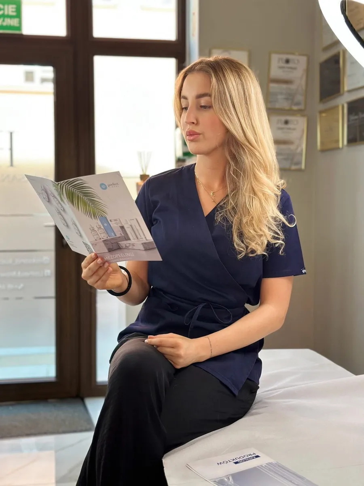

ZabiegiTreatments
Na co dzień wykonuję między innymi makijaż permanentny, mezoterapię, stymulatory tkankowe, zabiegi kwasami i wiele innych zabiegów pielęgnacyjnych i odmładzających.My everyday work includes permanent makeup, mesotherapy, skin boosters, acid peels and many other skincare and rejuvenating treatments.
Załóż konto i odbierz 10% zniżki na pierwszy zabiegCreate an account and get 10% off your first treatment
- Rezerwujesz w kilka kliknięć, bez wpisywania danych za każdym razem.Book in a few clicks, without entering your details every time.
- Widzisz nadchodzące wizyty i historię zabiegów.See your upcoming visits and treatment history.
- Odwołujesz wizytę online, bezpłatnie do 12 godzin przed terminem.Cancel online, free of charge up to 12 hours before the visit.
- Dostajesz oferty tylko dla zarejestrowanych klientek, m.in. na święta i urodziny.Get offers only for registered clients, including for the holidays and your birthday.
Jak umówić wizytęHow to book a visit
-
Wybierz zabiegChoose a treatment
Nie wiesz, od czego zacząć? Umów bezpłatną konsultację, a zabieg dobierzemy razem.Not sure where to start? Book a free consultation and we will choose the treatment together.
-
Wybierz terminChoose a time
W kalendarzu widzisz tylko wolne godziny, dopasowane do długości zabiegu.The calendar shows only free times that fit the length of the treatment.
-
Potwierdź rezerwacjęConfirm your booking
Potwierdzenie dostaniesz SMS-em, a dzień przed wizytą przypomnienie.You will get a text confirmation, and a reminder the day before your visit.

KosmetologCosmetologist
Justyna Mańka
Jestem absolwentką Uniwersytetu Jagiellońskiego i od trzech lat zajmuję się kosmetologią i zabiegami estetycznymi. W pracy łączę wiedzę o skórze z precyzją, której wymaga każdy zabieg, od makijażu permanentnego po stymulatory tkankowe.I am a graduate of the Jagiellonian University and have worked in cosmetology and aesthetic treatments for three years. In my work I combine knowledge of the skin with the precision every treatment needs, from permanent makeup to skin boosters.
Stale się szkolę i pracuję na sprawdzonych technologiach. Na każdą wizytę mam czas: zaczynamy od rozmowy, a plan zabiegów dopasowuję do Twojej skóry.I keep training and work with proven technologies. I take my time with every visit: we start with a conversation, and I tailor the treatment plan to your skin.
- WykształcenieEducationUniwersytet JagiellońskiJagiellonian University
- DoświadczenieExperience3 lata w kosmetologii i zabiegach estetycznych3 years in cosmetology and aesthetic treatments
- RadiofrekwencjaRadiofrequencySzkolenie z monopolarnej radiofrekwencji Oligio, prowadzone przez przedstawicieli producenta Wontech w 2N MedicalTraining in Oligio monopolar radiofrequency, run by representatives of the manufacturer Wontech at 2N Medical
- Terapie łączoneCombined therapiesSzkolenie z dr. De Felipe (IADE Akademia): mikroigłowa radiofrekwencja Potenza i terapie z egzosomamiTraining with Dr De Felipe (IADE Akademia): Potenza microneedling radiofrequency and exosome therapies